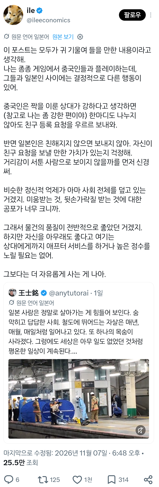

일본인이 생각하는 자살률의 이유
댓글
저렇게 열차에 사람들이 뛰어 들어도 스크린 도어도 제대로 안만드는 놈들이 무슨
이쯤되면 권장임
이거지
쟤네는 못만드는 것에 가까움
첫째로 철도가 사기업 소유라 굳이 돈을 투자하려고 안하고(사철이 대부분 이 케이스)
둘째로 같은 승강장에 서로 다른 열차가 들어오는 경우가 많아서 문이 서로 다른 곳에 있는 경우가 많음
(JR이 대부분 이 케이스)
지하철의 경우 대부분 공기업이거나 지방정부 소유고
규격화가 빡세게 되어 있어서 대부분 설치되어 있음
때문에 일본에서 투신 사고가 났다 하면 대부분 JR이나 사철에서 나고
지하철에서는 잘 안남
정보추
지하철에서 안난다는건 처음알았네 ㅎㄷㄷ
한국에서 친추 요청을 하는 경우는 2가지이다
다른 하나는 정말 잘 맞아서 계속 같이 플레이하고 싶을때고 또 다른 하나는...
흐흐 코자야?
보통 쌍욕을 드럼탄창 삽입하고 난사준비중이라 싱글벙글 거절누름 ㅋㅋㅋ
극찬이잖아?
난 수락도 거절도 안함
극찬을 보내드립니다
보지 쪽냈습니다
일본은 진짜 남눈치 보느라 힘든사회같다.. 한국은 남들을 신경 덜쓰니까 좀 자유롭고
한국은 가족눈치를 겁나보지않음? ㅋㅋ
일본은 가족눈치 보는거 이상의 수준으로 살면서 온사방을 신경써야함. 여자들보면 맨날 파벌 나뉘고 서로 뒤에서 뒷이야기하고 수군거리는 느낌 있을때가 있지? 그래서 뒷담화 안당하려고 맨날 신경쓰고 노력하고 . 그게 일본은 사회 기본 베이스임
얼마나 눈치를 주면 소란일으켰다고 피해자가 사과하는 사회냐
그렇게 따지면 중국이 가족눈치 한국보다 많이볼텐데
솔직히 한국도 눈치 주고 존나 음침하다 생각하는데
일본은 더 심함? 나라 자체가 거대한 교토인가
마치 사람들이 딱 들어맞는 네모임. 사회는 그 네모들이 딱딱 들어맞아서 형태를 이룸
거기서 누구하나 튀어나와서 형태를 망가트리면 그 사람이 피해자라도 죄인임
그래서 동네에서 누가 힘들어서 자살하면 위로가 아니고 동네분위기 망쳤다며 욕하기도 함
최근에 봤던건 자연재해 피난민들 피난처를 배경으로한 av제작 문제가 있었지. 근데 또 실화 베이스라나 뭐라나..
품번은 오다가 흘렸냐
FPS 게임하면 일본인들은 무조건 어디 구석에 숨어서 안나옴 게임 끝날 때까지
한국이 음침하다 생각하면 일본에선 못산다
중국은 밥도 동그란 테이블에서 서로 안면도 없는데
그자리에서 안면트고 먹는게 약간의 문화잖어
한국인이 중국,일본 현지언어 쓰면서 여행하는 유튜브
또 외국인이 한국여행하는 유튜브 보면
좀 그런거같긴함
일단 중국 한국은 이런저런 이유로 타인의 집이나 프라이빗 공간에 가는 경우가 종종 있는데
일본은 단 한번도 못봄
그런데 요즘은 한국도 중국이 아니라 일본 따라가자는 경향이 있으니
한국
앞으로도 서로 자주 볼 수 밖에 없는 구간 - 친추요청
잃은 것 없는 저티어 구간 - 화나서 패드립하려고 대기중
하지만 그런문화이기 때문에 대국으로 성장할수 있었던거지... 단점만있는건 아님
가서 살아보지 않으면 알수 없는 특유의 사회적인 분위기와 룰이 있음
직접 경험 안 해보면 모른다 존나 답답함
대신 그 룰만 안 깨부수면 나머지는 개인의 일로 취급하더라 뭘 하던
돈 적당히 벌고 타인과의 교류를 필요한 만큼만 하면서 본인에게 집중하는 사람은 일본이 정말 잘 맞고 오래 살더라고
꼬레아 감성 그대로 가지고 가면 진짜 힘듬 근데 요즘은 좀 비슷하게 가는거 같기도하고
그래도 대도심지랑 시골은 감성 차이 좀 있긴함 이시카와쪽에 있을때는 도쿄쪽 있을때보다 훨씬 사람들 대하는게 편했음 도쿄 돈 뿌리러 놀러가는 거 말고 살려면 진짜 존나 숨막힘 여러가지 의미로
에펙하다 느꼈는데 일본인은 미움 받을 용기가 좀 부족한 편임
플레이에 적극적이지 않고 수동적이다 라는 인상을 받았음
근데 최근 메타가 바뀌는지 중국인보다 미친 박치기공룡이 종종 보이더라
2차세계대전메타잖아그건
에펙할때 일본인들은 항상 점마 넘김 ㄹㅇ
맨날 일본인애들은 싸울때 미움받는다< 이러더만 ㅋㅋ
옛날엔 한국도 약간 중국같은게 있었음. 애들 귀여우면 덕담도 하고 술먹다보면 쉽게 친구먹고 산에가면 괜히 옆에 사람들이랑 뭐 나눠먹고. 근데 요즘은 개인화가 많이 되면서 모르는 사람이 말걸어오면 싫어하고 이상하게 쳐다보고, 상남자문화 이런거 엄청 사라지고 사회 전반의 분위기가 여성화 되면서 일본이랑 비슷해져가는 느낌이 있음
맞아 그런게 좀 있더라 그래서 라떼 하던 방식으로 20대 애들을 대하지 않으려고 조심하긴 하는데 삭막한 느낌이 들어서 외로운건 어쩔 수 없더라
같은 생각임
한국은 과거 중국에 가까웠고 점점 일본에
가깝게 변해가는 중이라고 생각함
이게 어느정도 공감이 가는 게 이터널리턴 늦등반하면 따거햄들 친추 겁나 옴 물론 받진 않았음
중국 애들은 확실히 게임하면서 친추 많이 보내더라
실제 만나면 중국애들은 대체로 호방한 편이라 친해지기 훨씬 쉬움.
대신 일본애들이랑은 눈살 찌푸리거나 언짢을 일이 거의 없음.
우리나라는 반반 느낌? 그리고 윗세대가 조금 더 중국스럽고, 젊은세대가 일본스런 느낌이 있음.
좃본새끼들 자살률 1위 헬조선 맛좀 보여주고싶네
요즘 헬조선 왜 쓰냐며 화내는 사람 있던데
자살률 1위 타이틀 유지하는 이상 난 써도 무방하다고 생각함
ㄹㅇ 그리고 먼가 디아블로 헬 난이도 생존자같은 느낌임ㅋㅋㅋ
나도 자살율 1위 좆같은데 그래도 우리나라라서 애증의 감정으로 쓰는거임
저런 일본보다 자살률 높은 한국은 뭐임?
일본인들은 안친한 타인이랑 눈치를 보는데
한국인들은 일면식도 모르는놈 이긴다고 경쟁함
3,4살짜리 사교육시키고 중고딩 애들 밤 10시까지 학원보내고 인서울 못가면 마치 패배한것처럼 취급함
여러나라 여행해봐도 한 동네가 전부학원가~한 건물이 통째로 학원인곳 본적이 없음
행복의 기준을 돈으로 두고 레버땡겨서 투자하고 창업하고 하다 망해서 하루에 40명 자살함
우리도 틀 벗어난 사람들에 대해 지탄이 심하지만
저쪽은 틀 벗어나면 뭐든 해도 상관없는 사람이 되버리는거같음
새끼들 엄살은…한국을 보라!!!